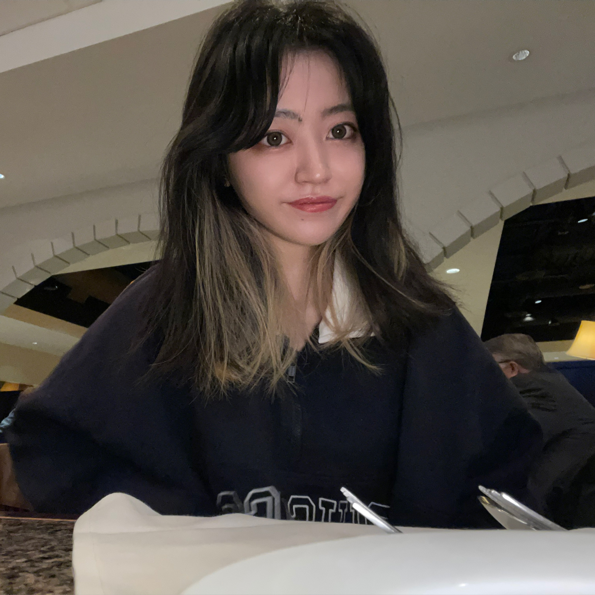

|  |
About me My name is Mingqian(Leona) Liu. I am pursuing a Master's degree in Data Science and Analytics program at Georgetown University and expect to graduate in May 2024. I received my bachelor's degree in Econometrics with a minor in Statistics from University of Illinois at Urbana-Champaign in 2022. For my career plan, I want to work in the tech industry as a software development engineer and my dream company is Google. During my free time, I enjoy working out in the gym, cooking, and playing guitar. I can be reached by: |